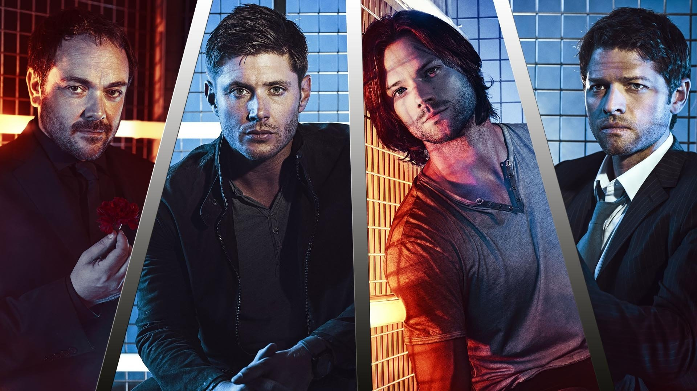
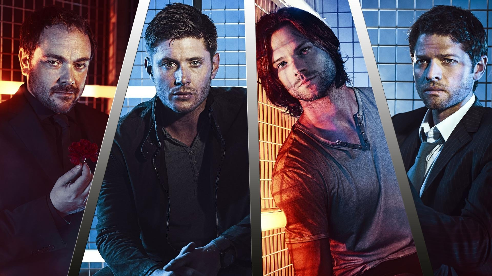

One Piece
Um pirata que estica com o sonho de se tornar o Rei dos Piratas e encontrar o tesouro mais raro do mundo, o One Piece.
Naruto
Um ninja com uma raposa selada em sua alma, e que corre o anime inteiro atrás de um Emo, o Sasuke Uchiha.
BLACK CLOVER
No vilarejo Hage, crescem 2 irmãos com o sonho de se tornarem o mago mais forte, o Rei Mago.Enquanto um não possui qualquer magia, o outro é um prodígio.
Tokyo Revengers
Um menino que volta 13 anos no passado para salvar a sua amada, seu nome é Takemichi Hanagaki, e ele chegará no topo da Toman.
Boku no Hero
Um garoto chamado Deku que sonha em ser o herói número 1.
Jujutsu Kaisen
Yuji Itadori é um garoto que após comer o dedo de Sukuna, o Rei das Maldições, se torna o seu receptáculo. Com a ajuda dos feiticeiros jujutsu e Gojo se torna mais forte.
Dragon Ball
A série segue as aventuras do protagonista, Son Goku, desde sua infância até a idade adulta enquanto ele treina artes marciais e explora o mundo em busca de sete esferas conhecidas como as Esferas do Dragão, que convocam um dragão que concede um desejo quando reunidas.
supernatural
Castiel